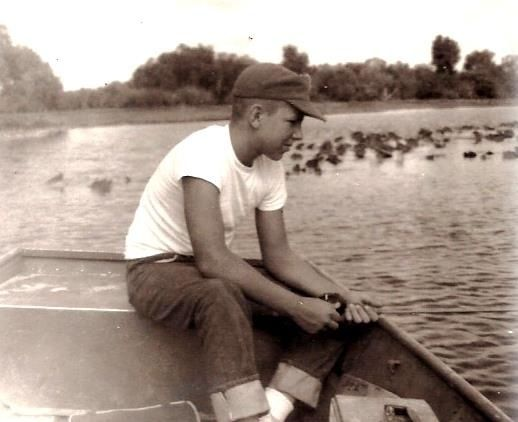

About
The story of the go fish diner goes back to before we even opened! It all started when Albert Demanto went fishing one day with his dad. Papa Demanto showed him how to prepare a fresh fish that day, and that's when Al discovered just how gosh darn delicious a fresh fish can be. After working some odd jobs around the coast of St. Pete, Al had saved enough to buy a shack on the coast and show the rest of the world what fish is all about. On that day in 1973, history was made.
Since the day we've opened, we've been dedicated to providing fresh, quality food. We've always focused on providing delicious homestyle meals for our guests, and likewise, we want to give them great service that makes them feel at home. We know our way around the kitchen, so you can bet that it'll be coming at you right quick.